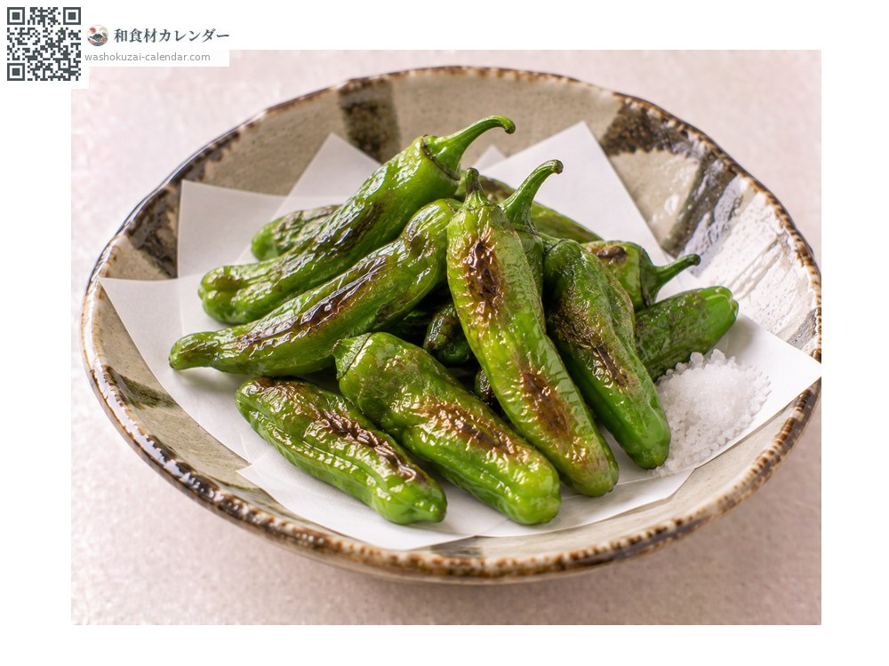
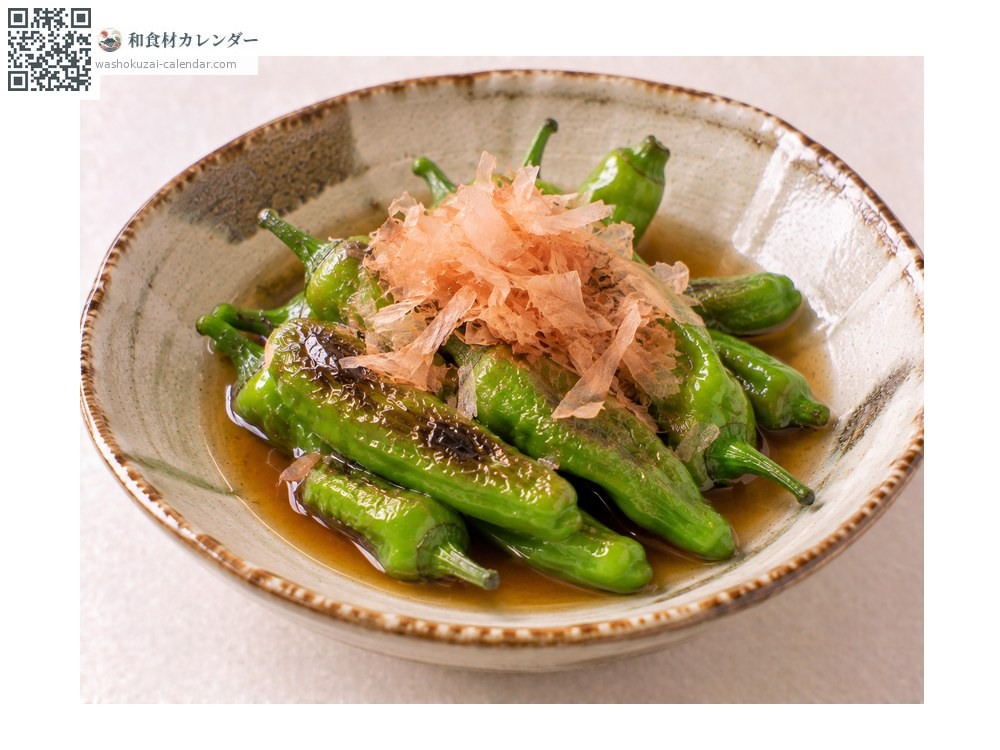
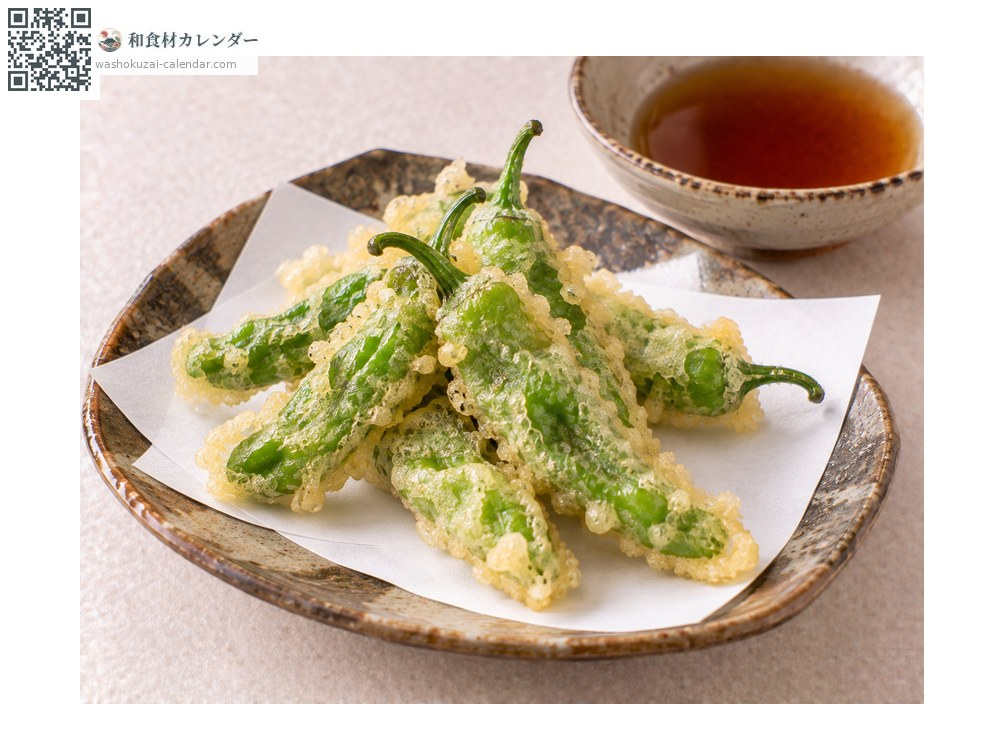
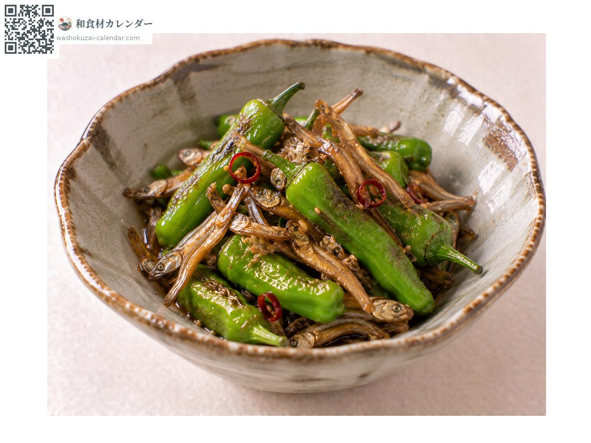

ผัก
พริกหวานชิชิโต
ししとう ししとう shishito
ชื่ออื่นshishito, shishitou, shishitogarashi, shishitougarashi
อร่อยที่สุดในเดือน มิ.ย., ก.ค., ส.ค.

ช่วงที่อร่อยที่สุด
ม.ค.
ก.พ.
มี.ค.
เม.ย.
พ.ค.
มิ.ย.
ก.ค.
ส.ค.
ก.ย.
ต.ค.
พ.ย.
ธ.ค.
ช่วงอร่อยที่สุดมีจำหน่าย
วิธีปรุง

ทอดไม่ชุบแป้ง
กรีดแล้วทอด โรยเกลืออย่างเดียวก็อร่อย

ยากิบิตาชิ
ย่างแล้วแช่น้ำดาชิ ความหอมไหม้จะติดมาด้วย

เทมปุระ
ชุบแป้งทอด เจาะรูก่อนเพื่อไม่ให้ระเบิด

คินปิระ
ผัดรสหวานเค็ม ใส่ปลาแห้งตัวเล็กด้วยก็เข้ากัน
วิธีเลือก
เขียวเข้มเป็นมันวาว รอยตัดที่ขั้วใหม่ ไม่มีรอยย่น
วิธีเก็บรักษา
ใส่ถุงแช่เย็น ใช้ภายใน 2-3 วัน
แหล่งผลิตหลัก
เกร็ดน่ารู้
ปลายผลคล้ายหัวสิงโต จึงเป็นที่มาของชื่อ ราวหนึ่งในสิบจะเผ็ดจัด เพราะการขาดน้ำหรือแสงทำให้ต้นเครียดและสร้างสารเผ็ดมากขึ้น ผลที่เมล็ดน้อยและเบามักเป็นผลที่เผ็ด
วัตถุดิบที่อร่อยที่สุดในช่วงเดียวกัน
 หน่อไม้ฝรั่ง
หน่อไม้ฝรั่ง ผักกาดหอมห่อ
ผักกาดหอมห่อ ผักปลัง
ผักปลัง เมียวกะ (ดอกขิงญี่ปุ่น)
เมียวกะ (ดอกขิงญี่ปุ่น) ใบชิโสะ
ใบชิโสะ ยอดอ่อนซันโช
ยอดอ่อนซันโช เมล็ดซันโชอ่อน
เมล็ดซันโชอ่อน ขิงญี่ปุ่น
ขิงญี่ปุ่น